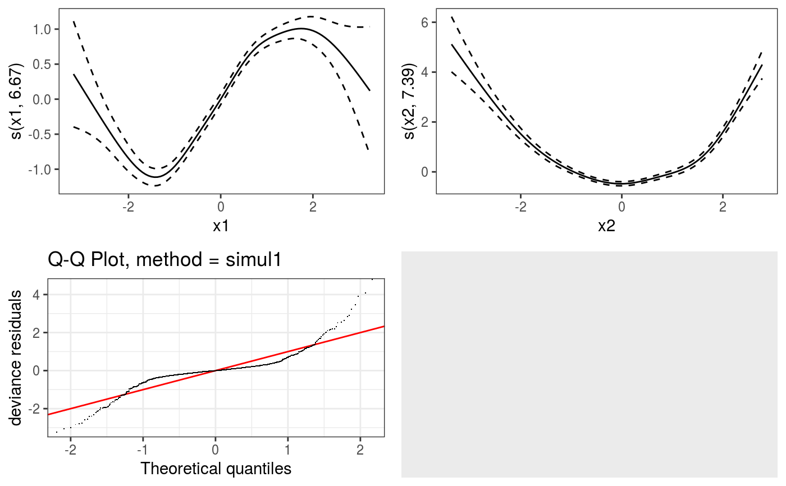

This is a wrapper for gridExtra::grid.arrange, which allows to
plot several plotSmooth objects on a grid.
gridPrint(...)
Arguments
| ... | arguments to be passed to |
|---|
Details
This function simply extracts the ggplot objects contained in any
object of class plotSmooth and passes them to gridExtra::grid.arrange.
Examples
library(mgcViz) n <- 1e3 x1 <- rnorm(n) x2 <- rnorm(n) dat <- data.frame("x1" = x1, "x2" = x2, "y" = sin(x1) + 0.5 * x2^2 + pmax(x2, 0.2) * rnorm(n)) b <- bam(y ~ s(x1)+s(x2), data = dat, method = "fREML", discrete = TRUE) b <- getViz(b) o1 <- plot( sm(b, 1) ) + l_fitLine() + l_ciLine() o2 <- plot( sm(b, 2) ) + l_fitLine() + l_ciLine() qpl <- qq(b) # All on one page, method 1: gridPrint(o1, o2, qpl, ncol = 2)# Works also when some ggplot objects are present gridPrint(o1, o2, qpl, ggplot(), ncol = 2)